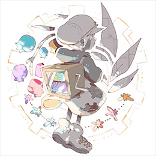

<div id="modal" class="profile">
  <div class="modal-page">
    <ul>
      <li>
        <p class="airtist">
          
          <span>sasakure.UK</span>
        </p>
        <div class="text">
          時代を越えて継承されてゆく寓話のように、物語の中に 豊かなメッセージ性 が織り込められた歌詞。緻密で高度な技術で構成された、ポップでありながら深く温かみのあるサウンド。それらを融合させることで、唯一無二の世界を表現する。<br>
          インターネット上で自身のサイトを拠点にオリジナルのインスト楽曲を発表する活動の後、VOCALOIDにインスピレーションを受け、作詞にも挑戦。動画投稿サイトにて注目を集める。<br>
          鈴木みのり、Sou、ド葛本社等のさまざまなアーティストへの楽曲提供のほか、初音ミクも登場するゲーム「セブンスドラゴン2020／2020-Ⅱ」および「 セブンスドラゴン III code:VFD」三作の主題歌、「初音ミク -Project DIVA -」や「オンゲキ」「maimai」等多くのゲームに楽曲収録されている。また、自身もメンバーとして参加するバンド「有形ランペイジ」の活動等、活躍の場を広げる。
        </div>
      </li>
    </ul>
  </div>
</div>